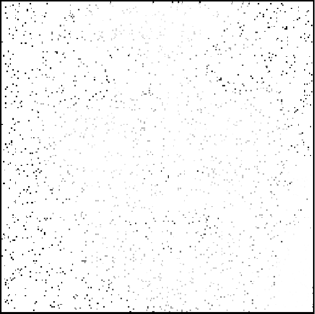

2 Image reconstruction model
The geometric model for sound reconstruction was inspired by a sub-Riemannian model of the visual cortex V1 for image reconstruction. Therefore, a preliminary study of the image reconstruction was needed in order to understand the sound model and the challenges that are faced in adapting the initial model for sound reconstruction.
2.1 Neoro-geometric model of V1
My supervisors and their colleagues have presented a cortical-inspired image reconstruction algorithm [5,6] based on the Citti-Petitot-Sarti (CPS) model of the human primary visual cortex V1 [10,22].
The CPS model is based on the work of Hubel and Wiesel [18] who observed that there are groups of neurons sensitive to positions and directions. This has inspired Hoffman [17] to model V1 as a contact space (a three-dimensional manifold endowed with a smooth map). Since an image can be seen as a function \(f:\mathbb{R}^2\rightarrow\mathbb{R}_+\) representing the grey level at given coordinates, the visual cortex adds the angle \(\theta\in P^1\) of the tangent line to the curve, where \(P^1=\mathbb{R}/\pi\mathbb{Z}\) is the projective line of non-directed angles. The model therefore lifts the image into \(\mathbb{R}^2\times P^1\).
2.2 Wilson-Cowan model in V1
The Wilson-Cowan (WC) model [27] describes the evolution of neural activations, more precisely, it describes the evolution of excitatory and inhibitory activity in a synaptically coupled neuronal network.
The interaction between the hypercolumns in V1 can be described through the WC equations [8]. An integro-differential equation describing the state \(a(x,\theta,t)\) of a population of neurons with V1 coordinates \(x\in\mathbb{R}^2\) and orientation \(\theta\in P^1\) at time \(t>0\) [5].
\[\begin{equation} \frac{\partial}{\partial t}a(x,\theta,t) = -\alpha a(x,\theta,t) + \nu \int_{\mathbb{R}^2\times P^1} \omega(x,\theta\| x',\theta') \sigma(a(x',\theta',t)) \mathrm{d}x'\mathrm{d}\theta' + h(x,\theta,t) \end{equation}\]

Reconstruction of a 97% corrupted image (left: original, middle: corrupted, right: reconstructed)